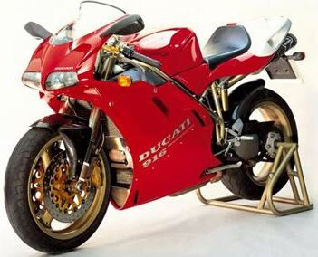

Diseñado por Massimo Tamburini y Sergio Robbiano y su equipo en
el Centro de Investigación Cagiva en San Marino, el motor
refrigerado por agua del 916 fue una revisión del de su
predecesor, el 888, con mayor cilindrada y un nuevo motor
sistema de gestión. El mayor desplazamiento se logró aumentando
la carrera del cigüeñal de 64 mm a 66 mm, manteniendo el mismo
diámetro interior de 94 mm que el 888, lo que resultó en una
capacidad de 916 cc. (Cuando se introdujo el 916, los motores
Corse 851/888 finales también habían aumentado su diámetro
interior a 96 mm, lo que resultó en capacidades "solo de
carrera" de 926 cc y 955 cc respectivamente).
